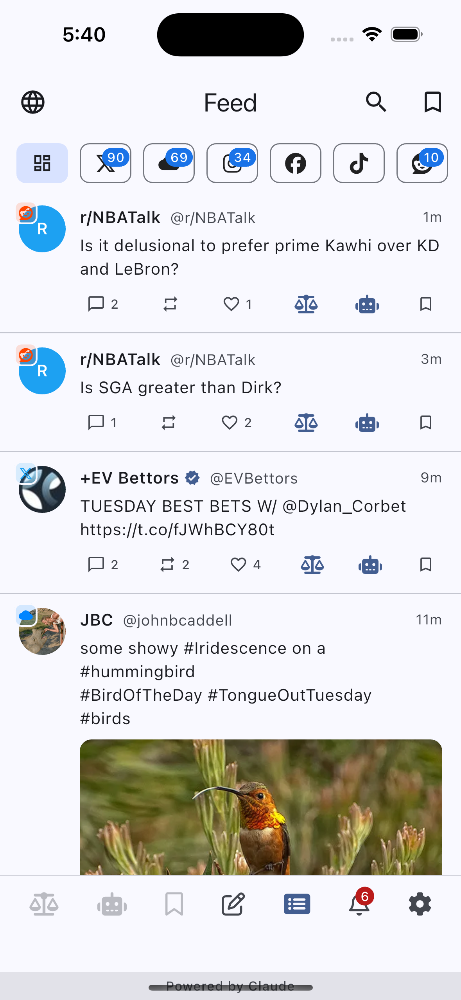
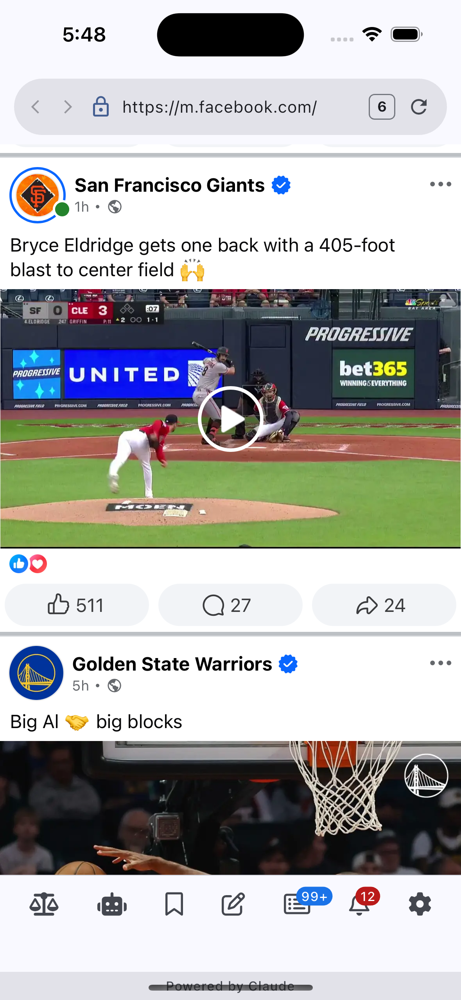
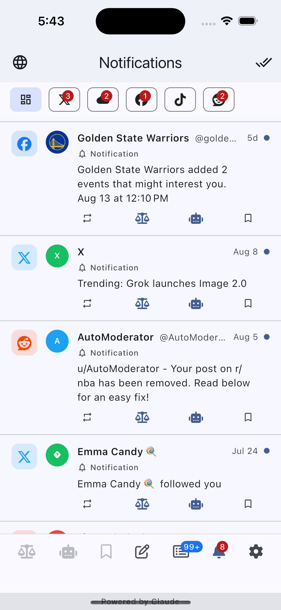

VeriSieve brings X, BlueSky, Instagram, Reddit, Facebook, TikTok and Threads together in one consolidated feed — with AI-powered fact-checking and bot detection built right in.



Scroll once instead of app-hopping seven times.
Tap Fact Check on any post to get an AI-powered assessment, powered by Claude — right where you're reading, no extra app required.
Built-in bot and noise detection flags accounts and content worth a second look, with a clear four-tier confidence badge.
Reply, repost, and like directly from the consolidated feed — no more juggling native apps for basic actions.
The built-in browser strips ads and fixes broken video playback on the platforms that need it most.
Save posts from any connected platform into one unified bookmarks list, filterable by platform.
Likes, replies, mentions, and follows from every connected platform, aggregated into a single stream.
VeriSieve runs almost entirely on-device. No ad tracking, no analytics SDKs, no accounts of our own — your social platform sessions stay yours. Learn more in our Privacy Policy.